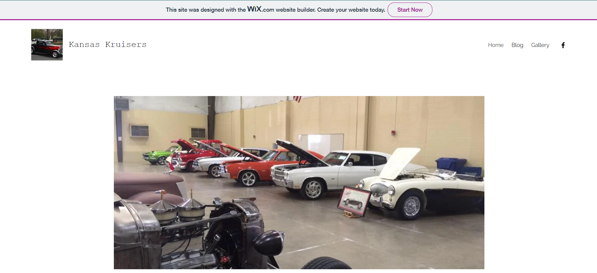
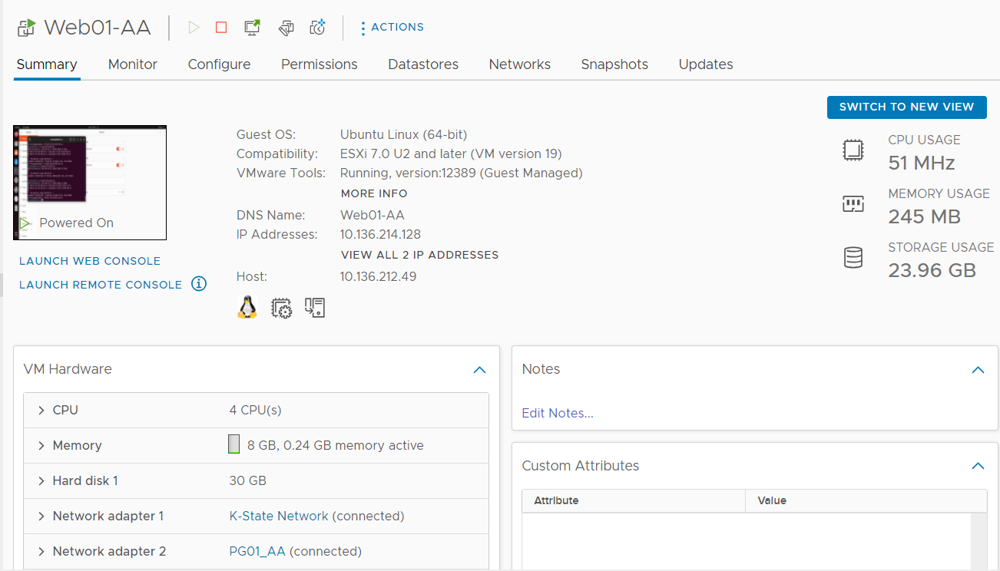

Anne Aeschliman
User Experience and Web Developer
About Me
I am Anne (Annie) Aeschliman, a western Kansas born-and-raised redneck, mental health survivor, multimedia artist,
and obscure knowledge connoisseur. Coming from a mental health disability, I threw myself into painting and doodling,
which helped me obtain a degree in Graphic Design from Garden City Community College. While I attending said college,
the vintage car I drove landed me a counterman job at a small automotive parts shop, and I stayed there until I
was drafted to an auto body shop. Then, I went back to school at Kansas State University for a degree in Digital Media Technology.
What spurned the drift into software engineering? While it was my generation that soaked up the rise of computing technology,
blue-collar culture is heavily intertwined with my background. Many ingenious folks taught me the importance of ignition timing
in pre-1980s motors and how to apply butyrate dope on fabric airplane wings, but they aren't up-to-date with computers. While the
WYSIWYG system is instrumental in helping computers make sense, there is a monumental gap between a few "clicks" between entire
repositories and touching a live spark plug wire the tactile squeeze of ratcheting a bolt into place.
Professional Goals
Cater to the skills of digital immigrants
Advance technology in the automotive field
Broaden my full-stack abilities
Constantly sharpen my knowledge of design trends
Resume
My Projects
Kansas Kruisers
The Kansas Kruisers is a non-profit car club operating out of Garden City, KS. I had the privilege of photographing each car show, managing their Facebook page, and building this website from May 2018 to August 2021. Unfortunately, this site did not fit their needs, but the media I developed to advertise their events and the documents I created to keep folks up-to-date assisted the club in their mission.
User Experience Wireframe and Assets
To obtain a User Experience Design certificate, I had to show my skills not only in creating a working wireframe, but also to display the elements within that wireframe. This way, I can easily guide users around an application while also showing necessary information for a front-end developer.
Class Wordpress Blog
My Hardware and Network Fundamentals class at K-State required me to complete assignments via a Wordpress blog. This way, I obtained experience with Wordpress whilst taking apart, putting together, and examining network hardware.

Wordpress Server Hosting
A large portion of the Intro to System Admin class I took was creating and managing an Apache web server, a MySQL Database, and a Windows 2019 server "Jump Box." This exposed me to VMware server management, the Ubuntu Linux system, and invaluable skills integrating Wordpress websites.
